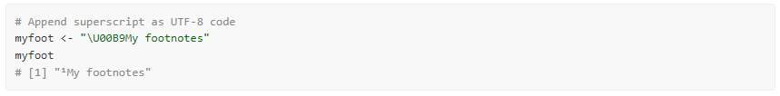
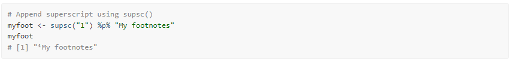
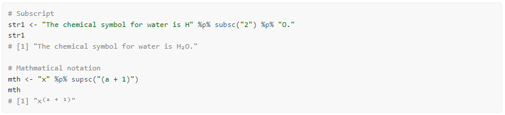
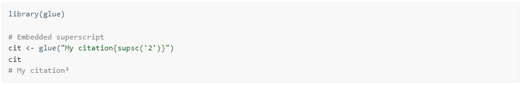
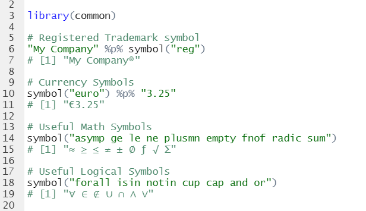
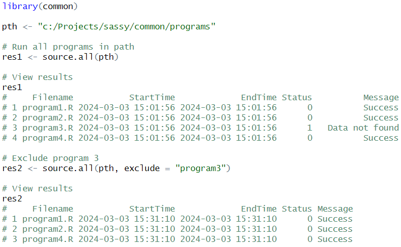

The common package is a lightweight package that contains solutions for commonly encountered problems when working in Base R.
Here is a list of the functions and a short explanation of each:
paste0() function.Normally, when working in Base R, it is necessary to quote variable names when passing them into a function or operator. For example, observe the R subset brackets:
# Variable names passed to subset are quoted
dat <- mtcars[1:10 , c("mpg", "cyl", "disp")]
# View results
dat
mpg cyl disp
Mazda RX4 21.0 6 160.0
Mazda RX4 Wag 21.0 6 160.0
Datsun 710 22.8 4 108.0
Hornet 4 Drive 21.4 6 258.0
Hornet Sportabout 18.7 8 360.0
Valiant 18.1 6 225.0
Duster 360 14.3 8 360.0
Merc 240D 24.4 4 146.7
Merc 230 22.8 4 140.8
Merc 280 19.2 6 167.6Some Base R functions and almost all tidyverse functions use Non-standard Evaluation (NSE) when passing variable names. This style of evaluation allows the user to type variables without using quotation marks or other methods of resolution.
Picking up from the previous example, let’s now subset the
dat data frame created above using the
subset() function, which uses NSE:
# No quotes on "cyl" using subset() function
dt <- subset(dat, cyl == 4)
# View results
dt
# mpg cyl disp
# Datsun 710 22.8 4 108.0
# Merc 240D 24.4 4 146.7
# Merc 230 22.8 4 140.8The v() function in the common package
is a quoting function. It allows you to use Non-Standard Evaluation
(NSE) even on functions that were not specifically written for NSE.
Observe:
# Create a vector of unquoted names
v1 <- v(mpg, cyl, disp)
# Result is a quoted vector
v1
# [1] "mpg" "cyl" "disp"
# Variable names not quoted
dat2 <- mtcars[1:10, v(mpg, cyl, disp)]
# Works as expected
dat2
# mpg cyl disp
# Mazda RX4 21.0 6 160.0
# Mazda RX4 Wag 21.0 6 160.0
# Datsun 710 22.8 4 108.0
# Hornet 4 Drive 21.4 6 258.0
# Hornet Sportabout 18.7 8 360.0
# Valiant 18.1 6 225.0
# Duster 360 14.3 8 360.0
# Merc 240D 24.4 4 146.7
# Merc 230 22.8 4 140.8
# Merc 280 19.2 6 167.6Base R provides sort and order functions that work adequately on vectors. For data frames, the options are more limited. In particular, if you want to sort a data frame by multiple columns, there are no functions in Base R to do it. The R documentation makes the following suggestion:
# Prepare data
dat <- mtcars[1:10, 1:3]
# Get sort order
ord <- do.call('order', dat[ ,c("cyl", "mpg")])
# Sort data
dat[ord, ]
# mpg cyl disp
# Datsun 710 22.8 4 108.0
# Merc 230 22.8 4 140.8
# Merc 240D 24.4 4 146.7
# Valiant 18.1 6 225.0
# Merc 280 19.2 6 167.6
# Mazda RX4 21.0 6 160.0
# Mazda RX4 Wag 21.0 6 160.0
# Hornet 4 Drive 21.4 6 258.0
# Duster 360 14.3 8 360.0
# Hornet Sportabout 18.7 8 360.0In the above example, notice that a) there is no actual sorting function for data frames, and b) the method illustrated above provides no way to control the sort order of the variables involved. They are all sorted ascending.
The sort.data.frame() function is an overload to the
generic sort() function that is tailored for data frames.
It allows you to sort by multiple columns, and control the sort
direction for each sort variable. Here is an example:
# Sort by cyl then mpg
dat1 <- sort(dat, by = v(cyl, mpg))
dat1
# mpg cyl disp
# Datsun 710 22.8 4 108.0
# Merc 230 22.8 4 140.8
# Merc 240D 24.4 4 146.7
# Valiant 18.1 6 225.0
# Merc 280 19.2 6 167.6
# Mazda RX4 21.0 6 160.0
# Mazda RX4 Wag 21.0 6 160.0
# Hornet 4 Drive 21.4 6 258.0
# Duster 360 14.3 8 360.0
# Hornet Sportabout 18.7 8 360.0
# Sort by cyl descending then mpg ascending
dat2 <- sort(dat, by = v(cyl, mpg),
ascending = c(FALSE, TRUE))
dat2
# mpg cyl disp
# Duster 360 14.3 8 360.0
# Hornet Sportabout 18.7 8 360.0
# Valiant 18.1 6 225.0
# Merc 280 19.2 6 167.6
# Mazda RX4 21.0 6 160.0
# Mazda RX4 Wag 21.0 6 160.0
# Hornet 4 Drive 21.4 6 258.0
# Datsun 710 22.8 4 108.0
# Merc 230 22.8 4 140.8
# Merc 240D 24.4 4 146.7The sort.data.frame() function also allows you to
control whether NA values are sorted to the top or bottom. See the
documentation for further information and more examples.
top
While many data operations in R do not require control over the labels on a data frame, some types of programming do. Particularly in situations where you are sharing data between multiple people and groups, the column labels can provide valuable information about the data contained in a particular column.
Unfortunately, Base R does not supply an easy way to manipulate these
labels. The only approach is to use the attr() function to
set the labels individually for each column. Like this:
# Prepare data
dat <- mtcars[1:10, 1:3]
# Assign labels
attr(dat$mpg, "label") <- "Miles Per Gallon"
attr(dat$cyl, "label") <- "Cylinders"
attr(dat$disp, "label") <- "Displacement"The labels.data.frame() function is an overload to the
Base R labels() function that is specific to data frames.
The function allows you to set labels for an entire data frame using a
named list. Here is an example:
# Prepare data
dat <- mtcars[1:10, 1:3]
# Assign labels
labels(dat) <- list(mpg = "Miles Per Gallon",
cyl = "Cylinders",
disp = "Displacement")
# View label attributes
labels(dat)
# $mpg
# [1] "Miles Per Gallon"
#
# $cyl
# [1] "Cylinders"
#
# $disp
# [1] "Displacement"This function makes it much easier to set and retrieve labels on a
data frame. The labels make it easier for users to understand the data.
This function should be included in Base R, but for some reason is
not.
top
Most programming languages provide a built-in concatenation operator.
R does not. Instead, it provides the paste() and
paste0() functions. While these functions do perform
concatenation adequately, it is sometimes more convenient to have an
operator.
The %p% operator is an infix version of the
paste0() function. It provides the same functionality of
paste0(), but in a more compact manner. Like so:
# Concatenation using paste0() function
paste0("There are ", nrow(mtcars), " rows in the mtcars data frame")
# [1] "There are 32 rows in the mtcars data frame"
# Concatenation using %p% operator
"There are " %p% nrow(mtcars) %p% " rows in the mtcars data frame"
# [1] "There are 32 rows in the mtcars data frame"The common package contains an enhanced equality
operator. The objective of the %eq% operator is to return a
TRUE or FALSE value when any two objects are compared. This enhanced
equality operator is useful for situations when you don’t want to check
for NULL or NA values, or care about the data types of the objects you
are comparing.
The %eq% operator also compares data frames. The
comparison will include all data values, but no attributes. This
functionality is particularly useful when comparing tibbles, as tibbles
often have many attributes assigned by dplyr functions.
Below is an example of several comparisons using the
%eq% infix operator:
# Comparing of NULLs and NA
NULL %eq% NULL # TRUE
NULL %eq% NA # FALSE
NA %eq% NA # TRUE
1 %eq% NULL # FALSE
1 %eq% NA # FALSE
# Comparing of atomic values
1 %eq% 1 # TRUE
"one" %eq% "one" # TRUE
1 %eq% "one" # FALSE
1 %eq% Sys.Date() # FALSE
# Comparing of vectors
v1 <- c("A", "B", "C")
v2 <- c("A", "B", "C", "D")
v1 %eq% v1 # TRUE
v1 %eq% v2 # FALSE
# Comparing of data frames
mtcars %eq% mtcars # TRUE
mtcars %eq% iris # FALSE
iris %eq% iris[1:50,] # FALSE
# Mixing it up
mtcars %eq% NULL # FALSE
v1 %eq% NA # FALSE
1 %eq% v1 # FALSEWhile it can be advantageous to have a comparison operator that does
not give errors when encountering a NULL or NA value, note that this
behavior can also mask problems with your code. Therefore, use the
%eq% operator with care.
top
Most programming languages provide a simple way to get the path of
the currently running program. This basic feature has been left out of
R. The Sys.path() function aims to make up for the
oversight.
# Get current path
pth <- Sys.path()
# View path
pth
# [1] "C:/packages/common/vignettes/common.Rmd"Note that this function returns the full path of the currently
running program, including the file name and extension. This
functionality is different from getwd(), which returns only
the current working directory.
As everyone knows, the R round() function rounds to the
nearest even. For example:
# Prepare sample vector
v1 <- seq(0.5,9.5,by=1)
v1
# [1] 0.5 1.5 2.5 3.5 4.5 5.5 6.5 7.5 8.5 9.5
# Base R round function
r1 <- round(v1)
# Rounds to nearest even
r1
# [1] 0 2 2 4 4 6 6 8 8 10However, humans and other software systems usually round 5 up. The reasons for R rounding the way it does are valid. Yet this difference in the way R rounds sometimes makes it difficult to compare R results to results from other software systems, particularly SAS®. It would be convenient if there were another rounding function that could be used when trying to compare R results to SAS®.
That is the purpose of the roundup() function. Observe
the differences in output to what was shown above:
# Round up function
r2 <- roundup(v1)
# Rounds 5 up
r2
# [1] 1 2 3 4 5 6 7 8 9 10Note that the function behaves differently when rounding negative values.
# Negate original vector
v2 <- -v1
v2
# [1] -0.5 -1.5 -2.5 -3.5 -4.5 -5.5 -6.5 -7.5 -8.5 -9.5
# Rounding negative values
r3 <- roundup(v2)
# Rounds away from zero
r3
# [1] -1 -2 -3 -4 -5 -6 -7 -8 -9 -10As you can see, when dealing with negative numbers, the
roundup() function actually rounds down. “Round away from
zero” is the best description of this function. The rounding logic of
the roundup() function matches SAS® software, and can be
used when comparing output between the two systems.
top
Sometimes you know the name of the file you are looking for, but do not know the exact location. It might be in the directory above your program, or it might be in the directory below. It could be one level up, or 3 levels up.
The file.find() function provides an easy way to search
for files you are looking for. You tell the function where to start
searching from and what to look for, and it will begin looking in the
base directory. Once the base directory is searched, it will expand the
search above and below the base directory. The search routine will
continue expanding the search until it hits the limits imposed by the
up and down parameters. Here is an
example:
# Look for a file named "globals.R"
pths <- file.find(getwd(), "globals.R")
pths
# Look for Rdata files three levels up, and two levels down
pths <- file.find(getwd(), "*.Rdata", up = 3, down = 2)
pthsThe function will return a vector of full paths that meet the search criteria, and are within bounds of the search. If no file is found that meets the search criteria, the function returns a NULL.
The dir.find() function works the same as
file.find(), but for directories instead of files. Note
that these two functions may be used together to perform complex
searches.
top
Sometimes you have a data frame with many variables, and you need to
perform an operation on only some of them. The find.names()
function can help you subset these variable names. There are parameters
to define the search criteria, provide exclusions, and a beginning and
ending range to perform the search. Here are some simple examples:
# Prepare data
dat <- mtcars
# View names
names(dat)
# [1] "mpg" "cyl" "disp" "hp" "drat" "wt" "qsec" "vs" "am" "gear" "carb"
# Get all names starting with "c"
find.names(dat, pattern = "c*")
# [1] "cyl" "carb"
# Get all names starting with "c" or "d"
find.names(dat, pattern = c("c*", "d*"))
# [1] "cyl" "carb" "disp" "drat"
# Get names starting with "c" or "d" from column 4 on
find.names(dat, pattern = c("c*", "d*"), start = 4)
# [1] "carb" "drat"Base R functions that work with data frames are annoying in that they often drop any attributes assigned to data frame columns. Observe:
# Prepare sample dataset
dat <- mtcars[ , 1:3]
# Assign some labels
labels(dat) <- list(mpg = "Miles Per Gallon",
cyl = "Cylinders",
disp = "Displacement")
# View labels
labels(dat)
# $mpg
# [1] "Miles Per Gallon"
#
# $cyl
# [1] "Cylinders"
#
# $disp
# [1] "Displacement"
# Subset the data
dat2 <- subset(dat, cyl == 4)
# Labels are gone!
labels(dat2)
# list()To get the attributes back, one must copy the attributes from the
original data frame to the subset data frame. That is what the
copy.attributes() function does. Picking up from the
example above, let’s now restore the attributes lost during the
subset() operation:
# Restore attributes
dat2 <- copy.attributes(dat, dat2)
# Labels are back!
labels(dat2)
# $mpg
# [1] "Miles Per Gallon"
#
# $cyl
# [1] "Cylinders"
#
# $disp
# [1] "Displacement"There are many occasions when you need to create a superscript or subscript. The UTF-8 character set provides superscript and subscript versions of many commonly used characters. For example, the following code can be used to add a superscript ‘1’ to the front of a footnote string: 
Remembering these UTF-8 codes, however, can be a challenge for most
people. The supsc() and subsc() functions look
up the superscript or subscript version of a normal character, without
having to remember or research the proper UTF-8 code.
Using these functions, we can therefore rewrite the above example as follows: 
Here are a couple more examples: 
Note that using the glue package, you can embed these functions directly in your character strings: 
The symbol() function retrieves symbols frequently used
in reports and documentation. This function is similar to the
supsc() and subsc() functions in that it looks
up a UTF-8 character. Instead of providing a direct 1 to 1 translation,
however, it looks up the UTF-8 character based on a keyword.
For example, the ’regkeyword looks up the registered trademark
symbol. The ’nekeyword looks up the symbol for not equals. These keyword
names follow HTML conventions. The function supports keywords for
trademarks, currencies, mathematical symbols, logical symbols, Greek
letters, and more. See the symbol() documentation for a
complete list of supported keywords.

It sometimes happens that you need to separate some strings by a certain number of blank spaces. This operation is often done in Base R as follows:
# Separate two strings by 25 spaces
str <- paste0("Left", paste0(rep(" ", 25), collapse = ""), "Right", collapse = "")
str
# [1] "Left Right"However, the above code is rather clumsy. The spaces()
function (plus the %p% operator also found in this package)
can clean up this type of task for you significantly. Observe:
Base R has a duplicated() function that is sometimes
used to identify grouping boundaries in a vector. But this function also
performs a unique() operation on the vector, such that not
all boundaries return a TRUE value. Observe the following:
# Create sample vector
v1 <- c(1, 1, 1, 2, 2, 3, 3, 3, 1, 1)
# Identify duplicated values
res1 <- !duplicated(v1)
# View duplicated results
res1
# [1] TRUE FALSE FALSE TRUE FALSE TRUE FALSE FALSE FALSE FALSENotice that the “1” at position nine does not return TRUE.
Now lets run the same vector through the changed()
function:
# Identify changed values
res2 <- changed(v1)
# View changed results
res2
# [1] TRUE FALSE FALSE TRUE FALSE TRUE FALSE FALSE TRUE FALSEThis time, the changed() function identified each time
the vector changed value, whether or not the value had appeared
previously.
This function can also be used on data frames:
# Create sample data frame
v2 <- c("A", "A", "A", "A", "A", "A", "B", "B", "B", "B")
dat <- data.frame(v1, v2)
# View original data frame
dat
# v1 v2
# 1 1 A
# 2 1 A
# 3 1 A
# 4 2 A
# 5 2 A
# 6 3 A
# 7 3 B
# 8 3 B
# 9 1 B
# 10 1 B
# Get changed values for each column
res3 <- changed(dat)
# View results
res3
# v1.changed v2.changed
# 1 TRUE TRUE
# 2 FALSE FALSE
# 3 FALSE FALSE
# 4 TRUE FALSE
# 5 FALSE FALSE
# 6 TRUE FALSE
# 7 FALSE TRUE
# 8 FALSE FALSE
# 9 TRUE FALSE
# 10 FALSE FALSEIf you wish to return a single indicator vector for the combination of all columns, use the “simplify” option.
# Get changed values for each column
res4 <- changed(dat, simplify = TRUE)
# View results
res4
# [1] TRUE FALSE FALSE TRUE FALSE TRUE TRUE FALSE TRUE FALSEThe above vector returns a TRUE when either the “v1” or “v2” value changes.
The “reverse” option identifies the last items in a group instead of the first:
# Find last items in each group
res3 <- changed(dat, reverse = TRUE)
# View results
res3
# v1.changed v2.changed
# 1 FALSE FALSE
# 2 FALSE FALSE
# 3 TRUE FALSE
# 4 FALSE FALSE
# 5 TRUE FALSE
# 6 FALSE TRUE
# 7 FALSE FALSE
# 8 TRUE FALSE
# 9 FALSE FALSE
# 10 TRUE TRUEBase R has a source() function to run a specified
program. What if you want to run an entire directory full of programs?
The source.all() function makes it easy!
The function allows you to run many programs at once. You can point the function to a directory, and run all the programs in that directory. Conveniently, the function will return a data frame that shows you the execution status for each program.
The function also has two parameters to help you control which programs get run: “pattern” and “exclude”. The “pattern” parameter allows you to pass a vector of inclusion criteria. The “exclusion” parameter does the opposite. Between the two, you will have very precise control over what gets executed.
The following example will execute four programs in a directory. Notice that the third program generates an error. The error message will be passed back to the result data frame, and the status set to 1. Also notice that the function will continue to execute the remaining programs, even if program 3 has an error.

See the source.all() documentation for additional
information and examples.